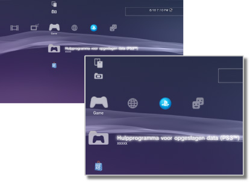

Game > Categorie Game
Categorie Game
De volgende pictogrammen worden getoond onder  (Game). De pictogrammen die worden weergeven, zijn afhankelijk van de gebruikscondities.
(Game). De pictogrammen die worden weergeven, zijn afhankelijk van de gebruikscondities.

 |
PlayStation®Store | Informatie van PlayStation®Store bekijken. |
|---|---|---|
 |
Game beëindigen | Software in PlayStation®3-formaat beëindigen. Dit pictogram wordt alleen weergegeven tijdens het spelen van een game. |
 |
(naam van titel) | Een PlayStation®3-softwaretitel spelen. Een afbeelding wordt weergegeven als het pictogram is geselecteerd. |
  |
Disc in PlayStation®2-formaat | Een PlayStation®2-softwaretitel afspelen. |
 |
Disc in PlayStation®-formaat | Een PlayStation®-softwaretitel afspelen. |
 |
Hulpprogramma voor opgeslagen data (PS3™) | Informatie over opgeslagen date voor PlayStation®3-software kopiëren/verwijderen of weergeven. |
 |
Hulpprogramma voor opgeslagen data (minis / PSP™) | Informatie over opgeslagen data voor minis en PSP™Game-software kopiëren/verwijderen of weergeven. |
 |
Diensten voor Memory Card | Sleuven aanmaken en toewijzen voor interne Memory Cards om data voor PlayStation®2-/PlayStation®-software op te slaan. U kunt ook informatie over de opgeslagen data kopiëren/verwijderen. |
 |
Hulpprogramma voor de PS Vita-systeemapplicatie | Wanneer u van het PS Vita-systeem naar het PS3™-systeem een back-up maakt van de opgeslagen data van games die u gespeeld hebt op het PS Vita-systeem of van toepassingsdata (gamedata), worden de data opgeslagen in het toepassingshulpprogramma van het PS Vita-systeem. |
|
Hulpprogramma voor gamedata | Voor bepaalde games kan bijkomende data worden opgeslagen. U kunt ook informatie over de data verwijderen of weergeven. |
 |
(PlayStation®3 of PlayStation®2-software geïnstalleerd in de systeemopslag) | PlayStation®3 of PlayStation®2-software geïnstalleerd in de systeemopslag. Een miniatuurafbeelding van de game wordt weergegeven. |
 |
(data gedownload naar de systeemopslag) | Dit pictogram wordt weergegeven voor game- of uitbreidingsdata die naar de systeemopslag zijn gedownload. Bij het opstarten worden de data geïnstalleerd. Het pictogram is afhankelijk van het type data. |
Opmerkingen
 of
of  wordt weergegeven voor inhoud die beperkt is door ouderlijk toezicht. De inhoud kan worden afgespeeld door een viercijferig wachtwoord in te voeren. Het wachtwoord kan worden ingesteld onder
wordt weergegeven voor inhoud die beperkt is door ouderlijk toezicht. De inhoud kan worden afgespeeld door een viercijferig wachtwoord in te voeren. Het wachtwoord kan worden ingesteld onder  (Instellingen) >
(Instellingen) >  (Beveiligingsinstellingen).
(Beveiligingsinstellingen).- Als een apparaat dat niet compatibel is met de HDCP（High-bandwidth Digital Content Protection）-standaard op het systeem is aangesloten met behulp van een HDMI-kabel, kan video en/of audio niet via het systeem worden uitgevoerd.
- Inhoud op een Blu-ray Disc die beschermd is door auteursrechten kan enkel aan 1080p worden uitgevoerd via een op een apparaat aangesloten HDMI-kabel die compatibel is met de HDCP-standaard.
- In zeldzame gevallen werken schijven en andere media mogelijk niet correct als ze op het PS3™-systeem worden afgespeeld. Dit is vooral te wijten aan variaties in het fabricatieproces of de codering van de software.
Let op
- Sommige PlayStation®2- of PlayStation®-softwaretitels kunnen anders werken op het PS3™-systeem dan op PlayStation®2- of PlayStation®-systemen of werken soms niet goed op het PS3™-systeem.
- Discs in PlayStation®2-formaat kunnen niet afgespeeld worden op sommige PS3™-systemen. Voor meer informatie kunt u [Types afspeelbare discs] raadplegen, de SIE-website voor uw regio bezoeken of de documentatie bekijken die met uw PS3™-systeem meegeleverd werd.